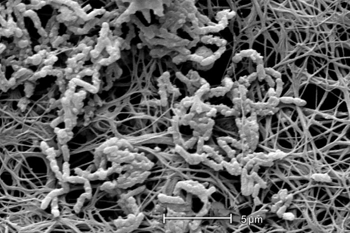

Premium layer
Assets transversais de orientacao e treino
`premium_system_map` Dominio: premium_layer · Surface alvo: premium_hub, premium_atlas · Funcao: ecosystem_map.
Hub premium `question_arsenal_board` Dominio: training · Surface alvo: premium_atlas, graphics_catalog · Funcao: training_prompt_board.
Atlas premium Registry Para ver permissao, trust level e status editorial, use o registro JSON canonicamente.
Abrir registry
Open real media
Lote real aberto ja ingerido
8 arquivos reais Fotos de dispositivo, contexto procedimental e RX reais ja foram baixados para uso local.
Manifesto Licenca limpa So entraram public domain, CC0, CC BY ou CC BY-SA. Nada com NC, ND ou licenca nebulosa.
Fila e lote Uso visivel O lote nao ficou escondido em pasta. Ele ja aparece aqui, no atlas e na arena de treino.
Arena
ID: `open_cvc_chest_xray_pd_medical` · Licenca: public domain · Uso: confirmacao e complicacao.
Imaging
RX real com CVC visivel Primeira ancora de imagem real para Part 5 e Part 6. Serve para trajetoria, ponta, leitura toracica e conversa honesta sobre confirmacao.
ID: `open_cvc_subclavian_xray_cc_by_sa_3` · Licenca: CC BY-SA 3.0 · Uso: leitura de trajeto real.
Imaging
RX real de linha subclavia Excelente para sair do desenho abstrato e entrar em um torax real com cateter real, inclusive dentro da arena de treino.
ID: `open_pneumothorax_xray_cc_by_4` · Licenca: CC BY 4.0 · Uso: dano e resposta precoce.
Complicacao
RX real de pneumotorax Ativo real para Part 6. A conversa deixa de ser simbolica e passa a ancorar dano toracico verdadeiro.
ID: `open_cvc_procedure_photo_cc_by_sa_4` · Licenca: CC BY-SA 4.0 · Uso: contexto procedimental real.
Procedure
Contexto real de insercao Foto real para tirar a tecnica do vazio. Bom para Part 4, OSCE e discussao de preparo do campo.
Batch 2
US real, malposicao real e manutencao real
US real Jugular interna hostil e colaterais reais agora entram no bundle com licenca aberta.
Arquivo Malposicao real Port em veia azigos para treinar leitura de trajeto aberrante em imagem real.
Arquivo Manutencao real Curativo transparente e suturas reais para Part 7, Part 9 e teacher mode.
Arquivo
ID: `open_ijv_ultrasound_narrowing_cc_by_sa_4` · Licenca: CC BY-SA 4.0 · Uso: tecnica e territorio hostil.
Ultrasound
Janela ruim em jugular real Ultrassom real para sair do abstrato na discussao de pescoco hostil, compressao extrinseca e necessidade de replano antes da perfuracao.
ID: `open_port_azygos_malposition_xray_cc0` · Licenca: CC0 1.0 · Uso: malposicao real.
Malposition
Port em azigos Imagem real de ponta em territorio aberrante. Excelente para Part 5, Part 6 e para a arena de leitura de imagem com custo clinico explicito.
ID: `open_central_line_dressing_cc_by_sa_4` · Licenca: CC BY-SA 4.0 · Uso: manutencao real.
Maintenance
Curativo e fixacao reais Manutencao deixa de ser conversa abstrata: agora ha curativo real e fixacao real dentro do bundle para Part 7, Part 9 e teacher mode.
Batch 3
US procedural real, par AP-lateral e trombose real
US procedural Foto real de probe no pescoco para tirar a tecnica guiada por US do desenho puro.
Arquivo AP + lateral Malposicao em azigos agora tem duas vistas reais para leitura de trajeto em vez de uma unica foto.
Arquivo Trombose real CT real de trombose de VCS para Part 6, Part 8, debate de remocao e teacher mode.
Arquivo
ID: `open_neck_ultrasound_procedural_pd` · Licenca: public domain · Uso: contexto procedural e posicionamento do probe.
Ultrasound live
Probe no pescoco, tecnica no mundo real Esta foto real nao substitui janela vascular de veia e arteria, mas resolve outra carencia: mostra ergonomia, contato e contexto real de US no pescoco.
ID: `open_port_azygos_malposition_lateral_cc0` · Licenca: CC0 1.0 · Uso: segunda vista real de malposicao.
Paired reading
Azigos em duas vistas reais O lote 3 fecha o par AP-lateral da malposicao em azigos. Isso melhora treino de trajeto, nao so identificacao da ponta em foto isolada.
ID: `open_svc_thrombosis_ct_cc_by_4` · Licenca: CC BY 4.0 · Uso: complicacao trombotica real.
Complication
Trombose de VCS em CT real A complicacao deixa de ser abstrata tambem no eixo trombotico. Esse CT real ajuda Part 6, Part 8, debriefing de remocao e debate de linha sem indicacao forte.
Batch 4
Sitio de saida real e biofilme real de cateter
Exit site real Foto real de sitio de saida para revisar pele, trajeto externo e vigilancia diaria.
Arquivo Biofilme staph SEM real de biofilme em cateter para amarrar infeccao relacionada a dispositivo ao mundo real.
Arquivo Biofilme + fibrina SEM real com Alcaligenes e material fibrinoide no lumen para discutir infecao, oclusao e salvage.
Arquivo
ID: `open_central_vein_catheter_exit_site_cc_by_sa_4` · Licenca: CC BY-SA 4.0 · Uso: sitio de saida e revisao diaria.
Exit site
O cateter tambem se julga pela pele O bundle ganha uma camada mais concreta: nao e so curativo e sutura, e tambem inspecao do sitio de saida, trajetoria externa e contexto cutaneo real.
ID: `open_catheter_biofilm_staph_phil_pd` · Licenca: public domain · Uso: infeccao relacionada a cateter.
Biofilm
Staph no cateter, nao so no discurso O debate sobre infeccao ligada a dispositivo ganha objeto real. Esse SEM do CDC PHIL ajuda a explicar por que biofilme nao e abstracao microbiologica irrelevante.

ID: `open_catheter_biofilm_alcaligenes_phil_pd` · Licenca: public domain · Uso: infeccao, oclusao e salvage.
Lumen problem
Biofilme e fibrina no mesmo eixo Esse segundo SEM real permite discutir linha que ainda esta no paciente, mas ja custa biologicamente caro: infeccao, material fibrinoide e a tentacao de salvar o acesso a qualquer preco.
Device batch
Familias reais de dispositivo
CVC set real Kit real para sequencia de Seldinger e preparo de campo.
Arquivo PICC real Foto real do dispositivo para separar familia central pelo braco de outros cateteres.
Arquivo Port real Port com gripper para identidade implantavel sem desenho generico.
Arquivo HD catheter real Cateter de hemodialise temporario para separar familia e finalidade.
Arquivo Queue canonica O lote seguinte ja tem necessidade editorial e dominio definidos.
Abrir fila Licencas e atribuicao Manifesto de entrada com regra dura de permissao, rastreio e uso visivel.
Abrir manifesto
ID: `part7_bundle_board` · Dominio: teaching · Surfaces: reality_class, teacher_mode, graphics_catalog.
Teaching
Maintenance bundles board Ativo forte para bundle, curativo, manutencao e debriefing. Reuso principal em Part 7, teacher mode e casos de cultura de equipe.
part7 teacher_mode bundle_audit
ID: `part8_hostile_board` · Dominio: hostile_territories · Surfaces: reality_class, graphics_catalog.
Hostile territories
Hostile territories board Organiza lado, historia vascular e contexto ruim no mesmo quadro. Melhor reuso em Part 8 e em casos de replano.
part8 case_support derived_didactic
Series anchors
Posters que puxam Parts 2 a 5
`part2_poster_masterclass` Dominio: access_ladder · Reuso: reality_class, masterclass, graphics_catalog.
Part 2 `part3_poster_atlas` Dominio: device_identity · Reuso: reality_class, atlas, graphics_catalog.
Atlas Part 3 `part4_poster_masterclass` Dominio: live_technique · Reuso: reality_class, masterclass, graphics_catalog.
Part 4 `part5_poster_atlas` Dominio: imaging_confirmation · Reuso: reality_class, atlas, graphics_catalog.
Atlas Part 5 Atlas premium Quando o objetivo e revisar rapido e navegar por reuso, nao listar cada campo de metadado.
Abrir atlas Metadado minimo Use o documento canonico para ampliar o catalogo sem virar amontoado de arquivos.
Abrir doc


{kind=link}
{kind=link}
{kind=link}
{kind=link}
{kind=link}
{kind=link}
{kind=link}
{kind=link}
{kind=link}
{kind=link}
{kind=link}
{kind=link}
{kind=link}
{kind=link}
{kind=link}
{kind=link}
{kind=link}
{kind=link}